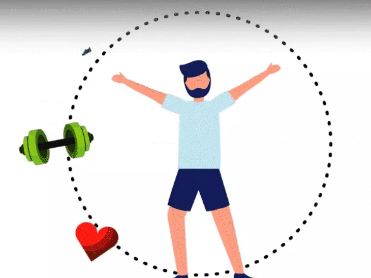

This section explores my physical characteristics, body image, and how I perceive myself in terms of my physical appearance and health.
Based on our previous topic about the Physical self, My physical self is defined by how I feel about my body, which is shaped by four connected parts: my internal Body Image, my external Body Appearance, my Body Fitness and capability, and my Health and Lifestyle choices like diet and sleep. These all influence each other, affecting my confidence and how I act. I focus on my strengths, which I like about myself and my body's abilities, and I'm not easily swayed by others' opinions. My insecurities and areas for growth are about wanting to improve my looks, fitness, eating, and daily activities to better care for my body and achieve my goals.
